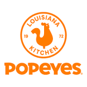

Certification 1: TestOut PC Pro

This was the first certification I earned in my first semester of
junior year of high school in the first year information technology
program at Four Rivers Career Center. This certification shows I
mastered the basic fundamental concepts of the physical hardware
side of information technology. I learned about all the components
that make up a computer and how each of them works, such as CPUs,
memory, storage, power supplies, motherboards, and any other physical
component required for a computer to function. I received the
certification through the company Testout before it was purchased by CompTIA
Verify PC Pro Certification
Certification 2: TestOut Network Pro

This was the second certification I earned in my second semester of junior year
of high school in the first year information technology program at Four Rivers
Career Center. This certification shows I mastered the basic fundamental concepts
of networking and server management, understanding network architecture, and how
networks operate together. I received the certification from the same company
as my first one, before it was purchased by CompTIA
Verify Network Pro Certification
High School Diploma
I graduated from Wright City High School, and received my diploma for my K-12
education, where I learned and mastered everything required by the Missouri Board
of Education. This foundation for all the concepts and fundamentals I need to
succeed in College
Job Experience: Popeyes Louisiana Kitchen Cashier

I worked at a Popeyes Louisiana Kitchen located inside of a Travel Centers
of America truck stop located in Foristell, Missouri for over a year as a cashier.
I gained valuable customer service skills and learned to work effectively in a
fast-paced environment to ensure things ran smoothly. My general manager favored
me for my work ethic and was sad to see me leave as a result of going to college.